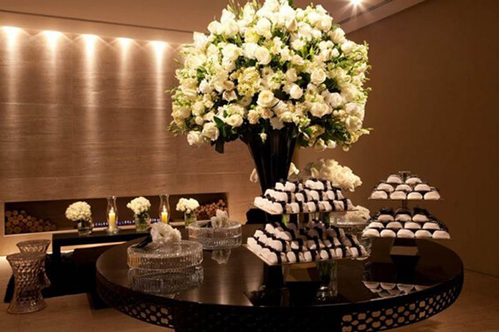

Um item importante como este não deve ser negligenciado. Apesar de ser um item caro do universo casamento é, senão o mais, um dos mais, importantes numa festa.
As flores dão o toque alegre, festivo e de frescor numa festa. Se for de casamento é imprescindível. As flores devem estar de acordo com a personalidade dos noivos, digo noivos, mas sempre quem escolhe é a noiva, são raros os noivos que opinam sobre isso.
As cores são importantes, elas definem, por muitas vezes, a alegria da festa.
Tenho visto e feito muitos casamentos em que as noivas optam por uma cerimônia com flores de cor única, normalmente brancas, clássicas.
5 Flores Brancas:
Rosas Brancas
Orquídeas
Gipsofilas
Tupilas
Alstroemérias
E para a festa as cores, às vezes um caleidoscópio imenso, com uma grande mistura de flores diferentes com cores diferentes! Pode-se também optar pela mistura de flores, verdes e frutas. Também, dependendo do estilo da festa, os noivos continuam com os mesmos tons da cerimônia na recepção.
Independente da sua escolha de flores elas devem ser, sempre, as que mais gosta. Lembrando que o que fica, para recordarmos, são as fotos e filmes, por isso a escolha tem que ser sua, para que esta lembrança seja doce!